Everything you need to plan a trip through Armenia, from the oldest monasteries in the world to abandoned Soviet observatories and the black stone streets of Gyumri
Armenia · Itinerary
Armenia Travel Guide with Perfect 7-Day Itinerary
Everything you need to plan a trip through Armenia, from the oldest monasteries in the world to abandoned Soviet observatories and the black stone streets of Gyumri
Armenia · Itinerary
Armenia Travel Guide with Perfect 7-Day Itinerary
Everything you need to plan a trip through Armenia, from the oldest monasteries in the world to abandoned Soviet observatories and the black stone streets of Gyumri
Armenia · Itinerary
Armenia Travel Guide with Perfect 7-Day Itinerary
Everything you need to plan a trip through Armenia, from the oldest monasteries in the world to abandoned Soviet observatories and the black stone streets of Gyumri
Armenia · Itinerary
Armenia Travel Guide with Perfect 7-Day Itinerary
Everything you need to plan a trip through Armenia, from the oldest monasteries in the world to abandoned Soviet observatories and the black stone streets of Gyumri
Armenia · Itinerary
Armenia Travel Guide with Perfect 7-Day Itinerary
Everything you need to plan a trip through Armenia, from the oldest monasteries in the world to abandoned Soviet observatories and the black stone streets of Gyumri
Armenia is a small country located in the Southern Caucasus region that has probably never crossed your mind as a travel destination. When Armenia does come up, the first things people think of are the Kardashians or an old Soviet man drinking vodka in a rural village.
In reality, Armenia is home to a modern capital, Yerevan (that is also 29 years older than Rome), filled with beautiful snow-capped mountains, ancient biblical monasteries, abandoned Soviet space observatories and surprisingly great food. For travelers, Armenia has everything you're looking for: it's safe, cheap, not crowded (I didn't wait in a line once!) and the locals are helpful. You can drive across the whole country in about 5 hours and it's well connected by public transport, so it is easy to get around and most sights are a day trip from Yerevan.
What makes Armenia so interesting is its culture and fascinating history. Armenia was the first country to adopt Christianity as its state religion, back in 301 AD, and its history since has been dark and layered: a powerful ancient kingdom that ruled much of the Caucasus, four centuries under the Ottoman Empire followed by the Armenian Genocide, 70 years in the Soviet Union and most recently a war with Azerbaijan in 2023.
In this article, you'll find the practical things I wish I'd known before going, plus a 7-day itinerary that hits the highlights. A week in Armenia stands on its own, but most travelers I met paired Armenia with Georgia next door.
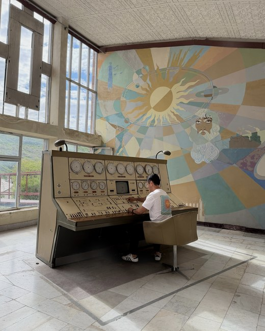
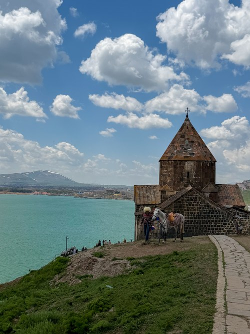
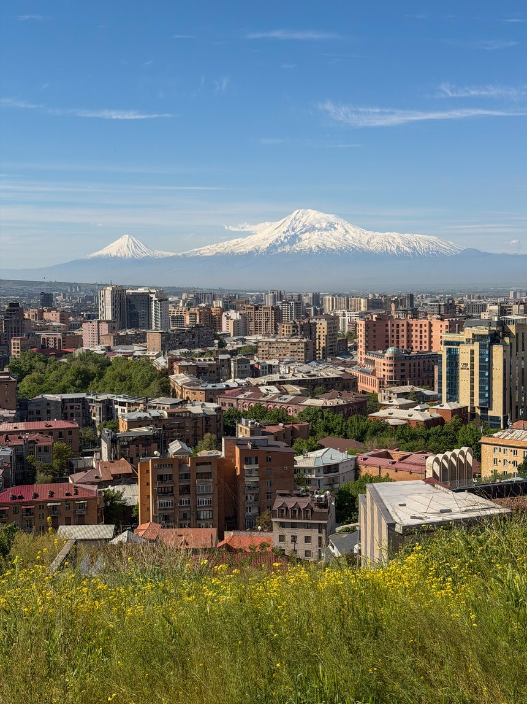
What to know before visiting Armenia
Best Time to Go
May to June and September to October. I was there in May: green valleys, snow still on the peaks and almost no crowds
How Long?
1 week covers Yerevan, the day trips and Gyumri; with 2 weeks, you can add the south and take it slower
Daily Budget
$30 to $60 for budget travel and $70 to $120 for mid-range, one of the cheaper countries I have traveled to
Visa Requirements
180 days without a visa for US, UK, EU and Australian passport holders, which is about as generous as it gets
Getting There
Fly into Zvartnots (EVN) in Yerevan, or cross overland from Georgia. The land borders with Türkiye and Azerbaijan are closed
By Car or Bus
Marshrutka vans between cities ($2 to $4), Yandex or GG rideshare in town ($2 to $5), or rent a car for the countryside
Currency
The Armenian Dram (AMD). Cards work in Yerevan, but carry cash everywhere else in the country
Language
Armenian, with Russian widely spoken as a second language. Younger Armenians speak English, especially in Yerevan
Best Time to Go
May to June and September to October. I was there in May: green valleys, snow still on the peaks and almost no crowds
How Long?
1 week covers Yerevan, the day trips and Gyumri; with 2 weeks, you can add the south and take it slower
Daily Budget
$30 to $60 for budget travel and $70 to $120 for mid-range, one of the cheaper countries I have traveled to
Visa Requirements
180 days without a visa for US, UK, EU and Australian passport holders, which is about as generous as it gets
Getting There
Fly into Zvartnots (EVN) in Yerevan, or cross overland from Georgia. The land borders with Türkiye and Azerbaijan are closed
By Car or Bus
Marshrutka vans between cities ($2 to $4), Yandex or GG rideshare in town ($2 to $5), or rent a car for the countryside
Currency
The Armenian Dram (AMD). Cards work in Yerevan, but carry cash everywhere else in the country
Language
Armenian, with Russian widely spoken as a second language. Younger Armenians speak English, especially in Yerevan
Best Time to Go
May to June and September to October. I was there in May: green valleys, snow still on the peaks and almost no crowds
How Long?
1 week covers Yerevan, the day trips and Gyumri; with 2 weeks, you can add the south and take it slower
Daily Budget
$30 to $60 for budget travel and $70 to $120 for mid-range, one of the cheaper countries I have traveled to
Visa Requirements
180 days without a visa for US, UK, EU and Australian passport holders, which is about as generous as it gets
Getting There
Fly into Zvartnots (EVN) in Yerevan, or cross overland from Georgia. The land borders with Türkiye and Azerbaijan are closed
By Car or Bus
Marshrutka vans between cities ($2 to $4), Yandex or GG rideshare in town ($2 to $5), or rent a car for the countryside
Currency
The Armenian Dram (AMD). Cards work in Yerevan, but carry cash everywhere else in the country
Language
Armenian, with Russian widely spoken as a second language. Younger Armenians speak English, especially in Yerevan
May–Jun
Best Time to Go
May to June and September to October. I was there in May: green valleys, snow still on the peaks and almost no crowds
7 days
How Long?
1 week covers Yerevan, the day trips and Gyumri; with 2 weeks, you can add the south and take it slower
$30–$60
Daily Budget
$30 to $60 for budget travel and $70 to $120 for mid-range, one of the cheaper countries I have traveled to
180 days
Visa Requirements
180 days without a visa for US, UK, EU and Australian passport holders
EVN
Getting There
Fly into Zvartnots (EVN) in Yerevan, or cross overland from Georgia. The land borders with Türkiye and Azerbaijan are closed
$2–$5
Transport
Marshrutka vans between cities ($2 to $4), Yandex or GG rideshare in town ($2 to $5), or rent a car for the countryside
Dram
Currency
The Armenian Dram (AMD). Cards work in Yerevan, but carry cash everywhere else in the country
Armenian
Language
Armenian, with Russian widely spoken as a second language. Younger Armenians speak English, especially in Yerevan
Best Time to Go
May to June and September to October. I was there in May: green valleys, snow still on the peaks and almost no crowds
How Long?
1 week covers Yerevan, the day trips and Gyumri; with 2 weeks, you can add the south and take it slower
Daily Budget
$30 to $60 for budget travel and $70 to $120 for mid-range, one of the cheaper countries I have traveled to
Visa Requirements
180 days without a visa for US, UK, EU and Australian passport holders, which is about as generous as it gets
Getting There
Fly into Zvartnots (EVN) in Yerevan, or cross overland from Georgia. The land borders with Türkiye and Azerbaijan are closed
By Car or Bus
Marshrutka vans between cities ($2 to $4), Yandex or GG rideshare in town ($2 to $5), or rent a car for the countryside
Currency
The Armenian Dram (AMD). Cards work in Yerevan, but carry cash everywhere else in the country
Language
Armenian, with Russian widely spoken as a second language. Younger Armenians speak English, especially in Yerevan
May–Jun
Best Time to Go
May to June and September to October. I was there in May: green valleys, snow still on the peaks and almost no crowds
7 days
How Long?
1 week covers Yerevan, the day trips and Gyumri; with 2 weeks, you can add the south and take it slower
$30–$60
Daily Budget
$30 to $60 for budget travel and $70 to $120 for mid-range, one of the cheaper countries I have traveled to
180 days
Visa Requirements
180 days without a visa for US, UK, EU and Australian passport holders, which is about as generous as it gets
EVN
Getting There
Fly into Zvartnots (EVN) in Yerevan, or cross overland from Georgia. The land borders with Türkiye and Azerbaijan are closed
$2–$4
By Car or Bus
Marshrutka vans between cities ($2 to $4), Yandex or GG rideshare in town ($2 to $5), or rent a car for the countryside
Dram
Currency
The Armenian Dram (AMD). Cards work in Yerevan, but carry cash everywhere else in the country
Armenian
Language
Armenian, with Russian widely spoken as a second language. Younger Armenians speak English, especially in Yerevan
Armenia isn't on most people's radar. So, why spend your hard-earned time off to go to Armenia? I visited in May 2026 with not much knowledge of the country going in. By the time I flew out, it was one of the most interesting countries I'd visited in a while and I wish I'd spent more time.
Armenia is a country of contrasts. The big cities like Yerevan and Gyumri are clean and modern, but as soon as you leave them, the countryside gets noticeably poorer and more Soviet. Here's what made the biggest impression on me:
Ancient biblical history you can walk right into — Armenia became the first country to officially adopt Christianity in 301 AD. You can visit many of the monasteries from the early Christian era, such as Khor Virap and Geghard, with biblical ties like Noah's Ark and the Holy Spear. It is fascinating to experience the history even if you're not religious
Remnants of the Soviet Union — Armenia was part of the U.S.S.R. for over 70 years, and you can travel back in time by visiting many of the monuments, murals and research complexes from the period. Key sites include the Cascade Art Complex and Orgov Space Observatory (see the top things to do section)
Affordability — besides the flight to Armenia, expect everything to be extremely affordable. Fancy meals are less than $10, rideshares are $2 to $5 and tours run for $15 to $20 per day. You'll get great value out of anything you spend your money on and there is great tourism infrastructure too
No crowds — nowhere I visited felt busy, including the headline sites. Armenia gets a fraction of the visitors that Georgia does next door and you notice it at the monasteries and in the restaurants. Now is the time to go, before it gets too popular!
Top Things to Do
Section 02
Top Things to Do
02Top Things to Do
What makes Armenia special is how much there is to do for its size, and once you're there it's hard to decide what to prioritize. These are the three I'd put at the top of the list:
The Orgov Observatory — a Soviet radio telescope left to decay in the mountains, and climbing it is one of the most adventurous things I've done. Hands down my favorite activity in Armenia, and very few people go. Don't miss it!
Geghard, Garni and the Symphony of Stones — one of the best day tours that I've done in a while. You start at a cave monastery carved into a hillside from biblical times, then you visit a Greco-Roman pagan temple and a lush green valley lined with towering hexagonal basalt columns
The Cascade Complex in Yerevan — located in downtown Yerevan, this is a huge limestone art complex structured as a giant staircase with a sculpture garden at the bottom. Don't miss the incredible view of Armenia's national symbol, Mount Ararat, which towers over the whole city
The Orgov Observatory — a Soviet radio telescope left to rot in the mountains, with pigs wandering around the grounds. You pay the guys at the gate about $5, climb up the dish and walk into a control room with pastel murals and Russian dials still on the panels. My favorite thing in Armenia, and very few people go.
Khor Virap with Mount Ararat behind it — a lone monastery on a flat plain with the mountain looming right over it. The inside is dark except for one shaft of light, and it is where the man who converted the country was imprisoned for 13 years.
Geghard, Garni and the Symphony of Stones — a cave monastery carved into a hillside, a Greco-Roman pagan temple from 77 AD on the cliff above it and a valley walled in by hexagonal basalt columns. All three are easily done in one day from Yerevan.
The Orgov Observatory — a Soviet radio telescope left to rot in the mountains, with pigs wandering around the grounds. You pay the guys at the gate about $5, climb up the dish and walk into a control room with pastel murals and Russian dials still on the panels. My favorite thing in Armenia, and very few people go.
Khor Virap with Mount Ararat behind it — a lone monastery on a flat plain with the mountain looming right over it. The inside is dark except for one shaft of light, and it is where the man who converted the country was imprisoned for 13 years.
Geghard, Garni and the Symphony of Stones — a cave monastery carved into a hillside, a Greco-Roman pagan temple from 77 AD on the cliff above it and a valley walled in by hexagonal basalt columns. All three are easily done in one day from Yerevan.
It was really tough to narrow it down to just the top 3. For more ideas, visit my full article on the Top 10 Things to Do in Armenia.
The Route: Suggested 7-Day Itinerary
Section 03
The Route: Suggested 7-Day Itinerary
03The Route: Suggested 7-Day Itinerary
In May 2026, I spent 5 absolutely packed days in Armenia, primarily basing myself in Yerevan and taking day trips out from there. Most of the key attractions are less than three hours from the capital, so basing yourself in Yerevan is the best way to explore the country.
As cliché as it may sound, my one regret was not staying longer. I structured the following itinerary as a 7-day itinerary to visit at a more relaxed pace and to provide flexibility to visit Southern Armenia. It is a bit too far for a day trip, but every traveler I met came back raving about it! Many of the stops have their own detailed guide, so follow the links to my other articles if you want to learn more about a destination.
You're likely going to start off your trip by landing at Zvartnots International Airport (EVN) and grabbing a 20-minute rideshare into the city for around $10 to $15. Once you're settled, head over to the Cascade, a Soviet-era modern art complex showcasing modern art sculptures on every terrace.
Spend the next couple days exploring all the best sites around Yerevan. Start the day with a free walking tour. I'd recommend it in Armenia more than most places, since the history is dark and layered, and it's best to get a local's perspective. The tour ended with a spread of Armenian dishes including the national dish, lahmajun, so it was a great primer on Armenian cuisine too.
Spend the afternoon at the Armenian Genocide Museum on the hill above the city. The museum goes into great detail about the Armenian Genocide, which is sadly only acknowledged by 34 countries today. It is a sobering view into the atrocities committed by the Ottoman Empire on its own Armenian citizens.
On your second day in the city, work through the rest of Yerevan. Take a stroll through a traditional market called GUM Market, where you can sample Armenian delicacies like dried fruit, sujukh and brandy. Spend the rest of the day exploring the other highlights of Yerevan: walk through the oldest neighborhood in the city called Kond and stop by the Blue Mosque, which is a beautiful Silk Road-style mosque. Finally, head up to Mother Armenia in Victory Park, where Soviet tanks and jets sit around a World War II memorial.
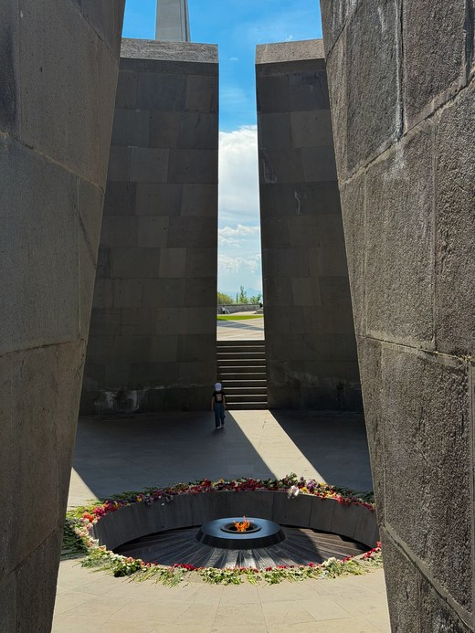
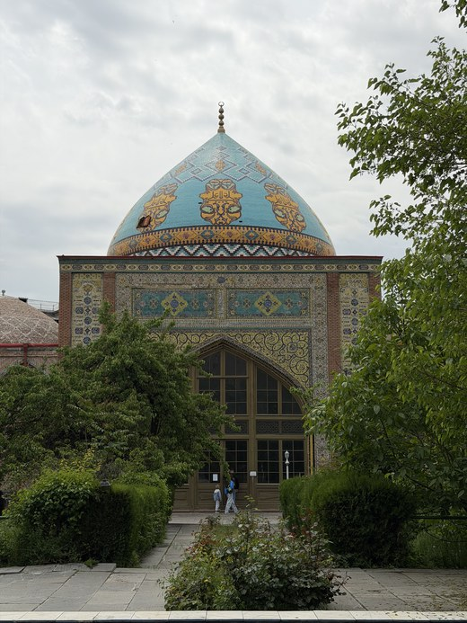
4
Khor Virap, Geghard, Garni & the Symphony of Stones
Day 4
Khor Virap, Geghard, Garni & the Symphony of Stones
Day 4 is a day trip dedicated to the most popular sites in Armenia, and it was one of my favorite trips in recent memory. I booked the tour with Go Global Tours and had an absolutely amazing time. Expect it to be about $20 to $30 for the day.
The tour starts at Khor Virap, a 4th-century monastery on a flat plain with Mount Ararat towering right behind it, then moves on to Geghard Monastery, carved into the cliff side. Both have ties to early biblical history. The afternoon continues with the Symphony of Stones, where basalt columns 5 to 6 stories tall line both sides of the gorge. The final stop for the day before returning to Yerevan is Garni, a pagan temple from the local religion that predates Armenia's conversion to Christianity.
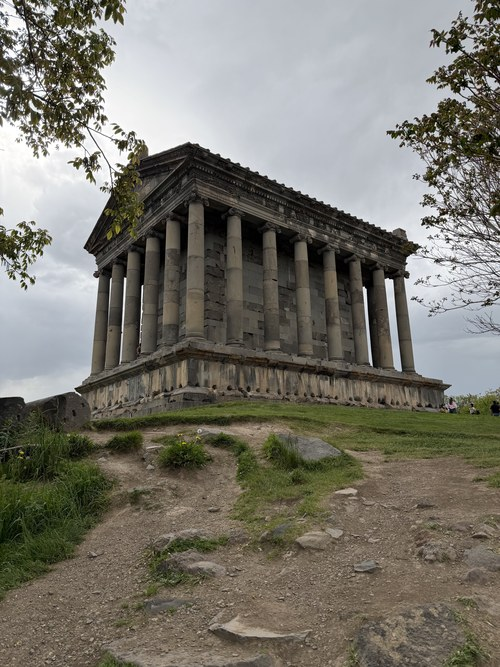
5
Lake Sevan & the Orgov Observatory
Day 5
Lake Sevan & the Orgov Observatory
The next day will take you to some of the most incredible sites in Armenia. Rent a car and head 1.5 hours north of Yerevan to Lake Sevan, a huge blue lake with mountains all around it, and walk up to Sevanavank Monastery above the shore for the view.
Then take the detour to the Orgov Observatory, which ended up being the highlight of my whole trip. It is a Soviet space observatory abandoned up in the mountains that feels completely frozen in time. Walk right up the dish (or climb to the top if you're brave enough), then into the control room complete with its original pastel murals and old Russian dials.
With a car, you can add 2 more stops on the same loop: an abandoned Soviet Tu-134 plane parked next to a reservoir and the Black Wall, a hidden mine under grassy hills.
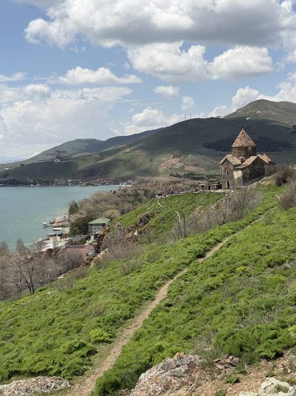
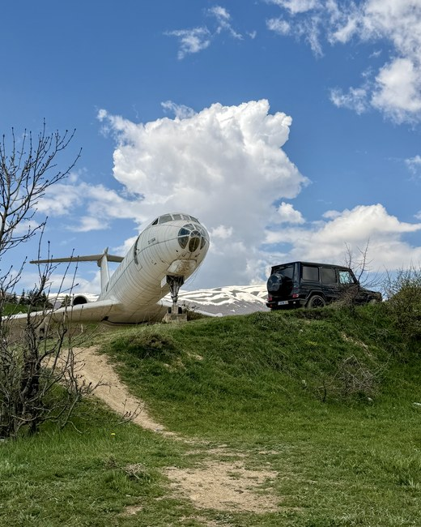
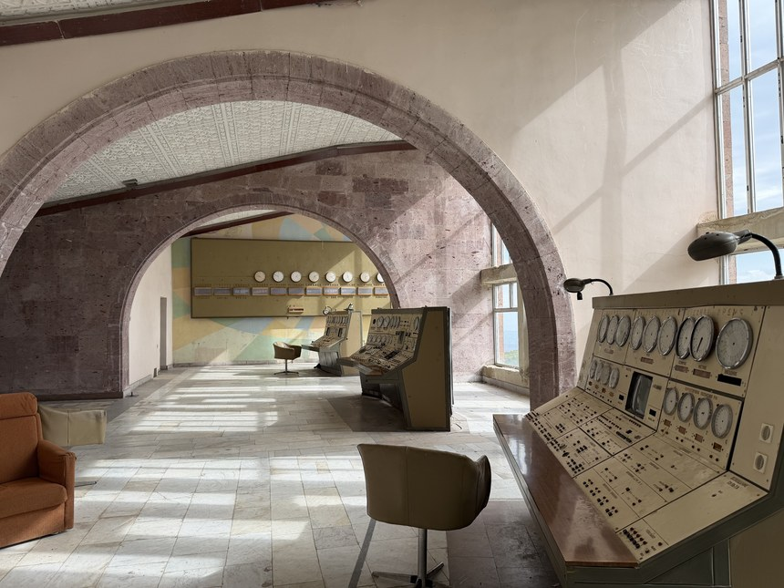
6
Day Trip to Gyumri, the Black City
Day 6
Day Trip to Gyumri, the Black City
Gyumri, the second-largest city in Armenia, is an easy day trip from Yerevan by public transport. To start your day, catch the morning marshrutka to Gyumri, which takes 2.5 to 3 hours.
Known as the Black City since most of the buildings are built out of dark volcanic stone, Gyumri is home to the most traditional Armenian architecture in the country. Visit the local open-air market, admire the cathedrals and stroll the pedestrian streets. Farther out of town lie Mother Armenia of Gyumri and the Black Fortress, two of the more unusual architectural sites in Armenia.
Then catch the late-afternoon marshrutka back and you'll be in Yerevan in time for dinner. I'd stay in Gyumri overnight if your schedule allows. Read my Gyumri guide for more details.
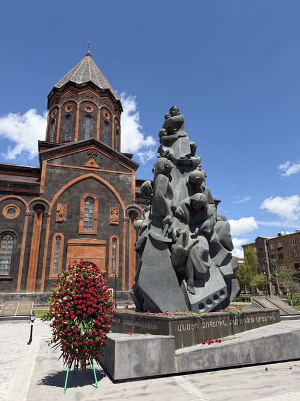
7
A Free Day for the Places I Missed
Day 7
An Extra Day to Explore or Relax
I left the last day open on purpose. If I could redo my trip, I would set aside a full 7 days in Armenia since I ran out of time before seeing everything I wanted to. Here are some places that kept getting recommended, from my tour guides and from other travelers:
Tatev — my walking tour guide (a local Armenian) called this the most beautiful part of Armenia and it is what I regret skipping the most. It is famous for Tatev Monastery, the world's longest cable car, some incredible nature and hiking. You can book a day tour or reach it via marshrutka (~5 hours each way)
Dilijan — a small forested town near Lake Sevan that is often called Armenia's Switzerland. I've heard pretty mixed reviews, so set your expectations accordingly, but it is an easy stop if you're already visiting Lake Sevan
Alaverdi — an old Soviet mining town near the Georgian border. Worth a stop if you're crossing from Georgia for the Haghpat and Sanahin monasteries and the abandoned Soviet industrial architecture
Tatev — my walking tour guide called this the most beautiful part of Armenia and it is what I most regret skipping. A monastery on a cliff edge in the far south, reached by the world's longest cable car, with some serious hiking around it
Dilijan — a small forested town near Lake Sevan that is often called Armenia's Switzerland. I heard pretty mixed reviews, so set your expectations accordingly, but it is an easy stop on the way back from the lake
Alaverdi — an old Soviet mining town near the Georgian border. Worth a stop if you're crossing overland for the Haghpat and Sanahin monasteries and the abandoned industrial architecture
Areni and the wine country — the oldest known winery in the world (over 6,000 years old) was found in a cave here. The region south of Yerevan is where Armenian wine comes from. Easy to combine with a trip further south to Tatev
Nagorno-Karabakh — worth understanding rather than visiting. The territory was lost in 2023 and its Armenian population was displaced, and it comes up often in conversation. Read up on it before you go and a lot more of the country will make sense
Tatev — my walking tour guide called this the most beautiful part of Armenia and it is what I most regret skipping. A monastery on a cliff edge in the far south, reached by the world's longest cable car, with some serious hiking around it
Dilijan — a small forested town near Lake Sevan that is often called Armenia's Switzerland. I heard pretty mixed reviews, so set your expectations accordingly, but it is an easy stop on the way back from the lake
Alaverdi — an old Soviet mining town near the Georgian border. Worth a stop if you're crossing overland for the Haghpat and Sanahin monasteries and the abandoned industrial architecture
Areni and the wine country — the oldest known winery in the world (over 6,000 years old) was found in a cave here. The region south of Yerevan is where Armenian wine comes from. Easy to combine with a trip further south to Tatev
Nagorno-Karabakh — worth understanding rather than visiting. The territory was lost in 2023 and its Armenian population was displaced, and it comes up often in conversation. Read up on it before you go and a lot more of the country will make sense
Armenian Cuisine
Section 04
Armenian Food
04Armenian Food
Armenian cuisine deserves more recognition than it gets and is often overshadowed by its neighbors. Here are some of the dishes to try when you're in the country:
Lahmajun — Armenia's national dish, a thin flatbread covered with a layer of spiced lamb. You'll find it all over the country and it is light enough for an afternoon snack. Anteb Restaurantand Elie's Lahmajun are the best places to try lahmajun in Yerevan
The Massive Lahmajun at Elie's
Manti — small dumplings baked until the tops are crunchy. They are served with yogurt and tomato sauce. Different from the Turkish version that is usually boiled
Lavash — a large flatbread baked in an underground oven and served with every meal. Many tours come with a lavash-making demonstration
Armenian cognac — Armenians are famous for their brandy and the Ararat Brandy Factory runs tasting tours
Sujukh — walnuts threaded onto a string and dunked in grape juice until it hardens around them. Buy it at GUM Market, where you'll be given a free sample at every stall
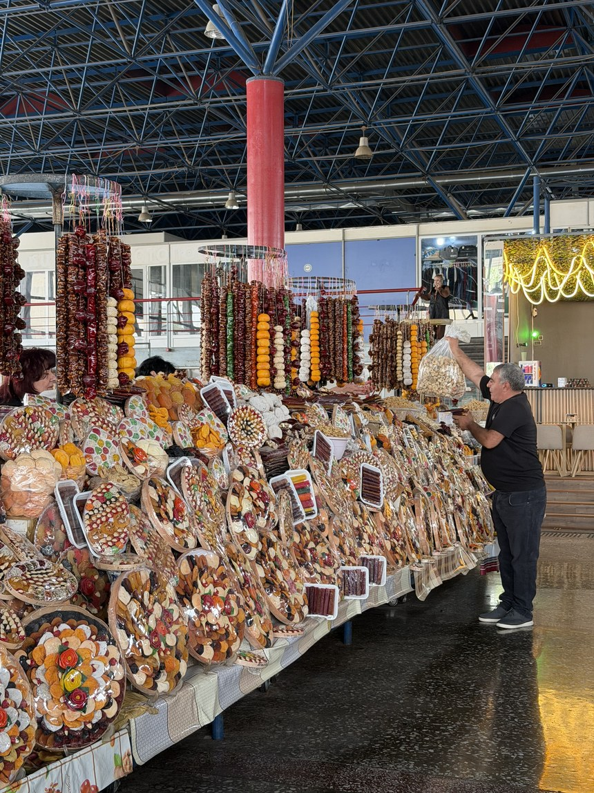
Sample Armenian specialties at GUM Market in Yerevan
Lahmajun — a thin flatbread with spiced lamb, and the closest thing Armenia has to a national dish. My free walking tour ended at a Western Armenian restaurant serving it, which was a good primer on the rest
Khorovats — skewered meat grilled over wood, and the closest thing here to Persian barbecue
Manti — small dumplings baked until the tops go crunchy. Türkiye boils theirs, Armenia bakes them and spoons over tomato and yogurt
Lavash — flatbread baked in an underground oven and served with every meal. Most Geghard and Garni tours add a lavash class, which sounds like a gimmick. I didn't eat better bread anywhere in Armenia
Sujukh — walnuts threaded onto a string and dunked in grape juice until it hardens around them. Buy it at GUM Market, where someone hands you something to try every few stalls and nobody chases the sale
Armenian cognac — Armenians are famous for it and the Ararat Brandy Factory runs tasting tours. Buy your bottle at the market rather than at the airport, where it costs more
Lahmajun — a thin flatbread with spiced lamb, and the closest thing Armenia has to a national dish. My free walking tour ended at a Western Armenian restaurant serving it, which was a good primer on the rest
Khorovats — skewered meat grilled over wood, and the closest thing here to Persian barbecue
Manti — small dumplings baked until the tops go crunchy. Türkiye boils theirs, Armenia bakes them and spoons over tomato and yogurt
Lavash — flatbread baked in an underground oven and served with every meal. Most Geghard and Garni tours add a lavash class, which sounds like a gimmick. I didn't eat better bread anywhere in Armenia
Sujukh — walnuts threaded onto a string and dunked in grape juice until it hardens around them. Buy it at GUM Market, where someone hands you something to try every few stalls and nobody chases the sale
Armenian cognac — Armenians are famous for it and the Ararat Brandy Factory runs tasting tours. Buy your bottle at the market rather than at the airport, where it costs more
Early summer (May to June) and early fall (September to October) are the best times to visit Armenia. I was there in the middle of May and the timing was pretty much perfect: green valleys, blossoming wildflowers, snow still on the peaks and just enough of a chill in the evenings to want a jacket.
Armenia has real extremes the rest of the year. Summers in Yerevan regularly push past 95°F (35°C) and the whole city empties out onto Lake Sevan, while winters are properly cold and some mountain roads close.
Cold SeasonNov – Apr
Nov
1–12°C
34–54°F
Dec
−3–6°C
27–43°F
Jan
−5–3°C
23–37°F
Feb
−3–6°C
27–43°F
Mar
1–13°C
34–55°F
Apr
7–20°C
45–68°F
Warm SeasonRecommendedMay – Oct
May
12–25°C
54–77°F
Jun
16–31°C
61–88°F
Jul
20–35°C
68–95°F
Aug
20–35°C
68–95°F
Sep
15–30°C
59–86°F
Oct
8–21°C
46–70°F
Getting There
Section 06
Getting There
06Getting There
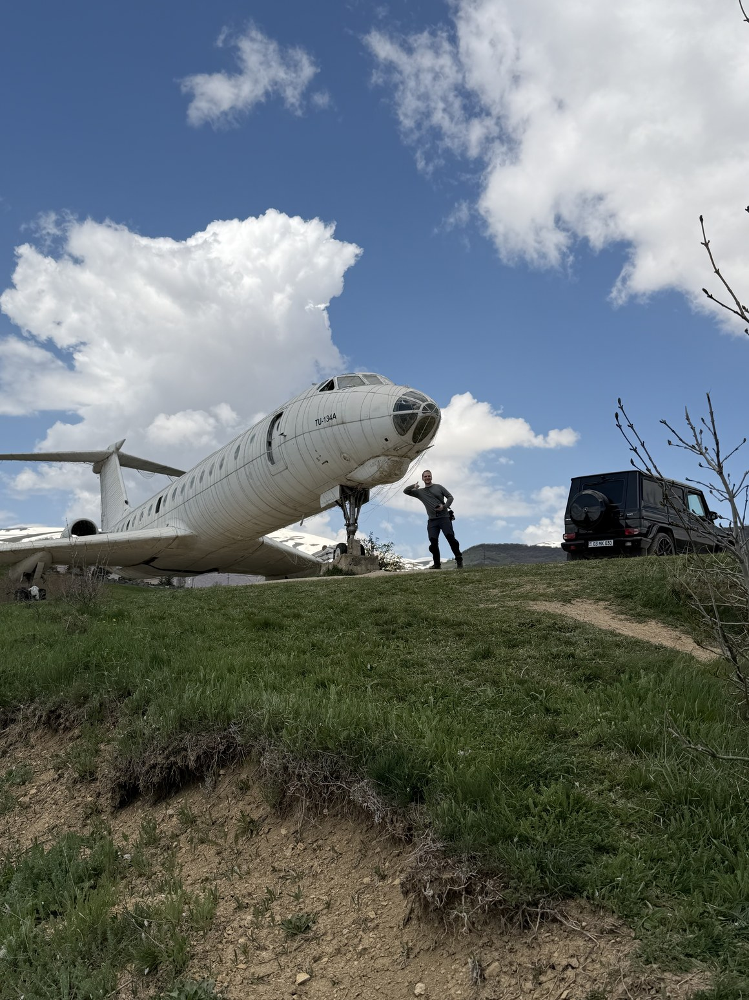
You're likely flying to Armenia!
Unless you're coming overland from Georgia, you'll land at Zvartnots International Airport (EVN), a 20-minute drive west of Yerevan. The country is well connected to major hubs in Europe and the Middle East, so expect a connection in Istanbul, Vienna, Athens, Doha or Moscow.
If you're traveling overland, Georgia is really your only option since the land borders with Türkiye and Azerbaijan are closed. The Iranian border to the south is technically open, but a whole other story for travelers. From Georgia, marshrutkas, buses and an overnight train run regularly between Tbilisi and Yerevan.
By Car or Bus
Section 07
By Car or Bus
07By Car or Bus
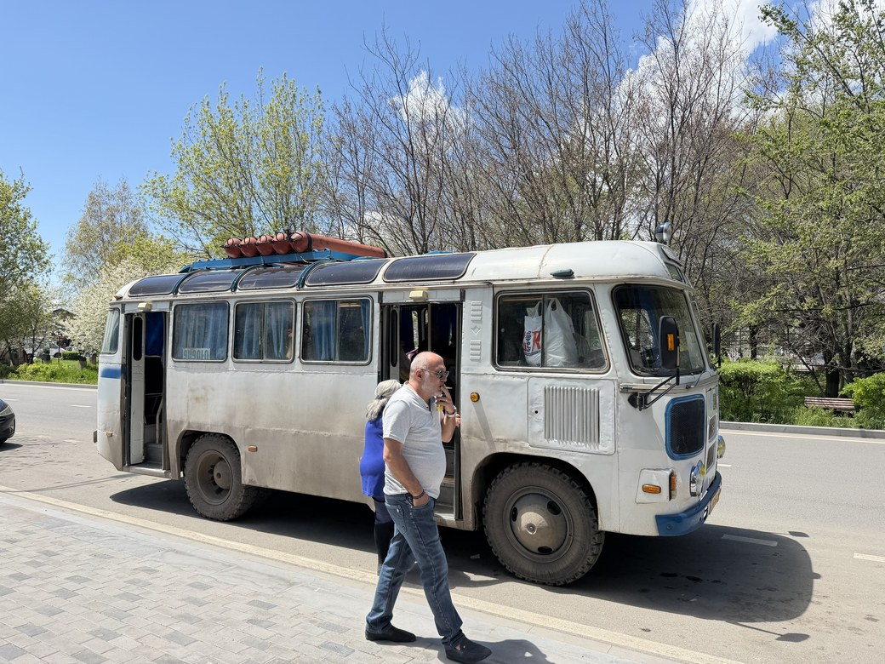
Hitch a ride on a Soviet bus (a rare find!)
Once you're in Armenia, getting around is easier and cheaper than I expected. You can use ridesharing apps (YandexGo or GG) in the main cities, the vast system of marshrutkas (minibuses) outside of the city and rent a car for even more flexibility.
Marshrutka — a well-connected system of minibuses that link almost every town, and how most Armenians get around. Marshrutkas only cost a few dollars (even to cross the entire country) and don't run to a timetable. They only leave once full, so build some slack in your schedule
Yandex and GG — Armenia's version of Uber, and the simplest way to get around Yerevan. Rides across the city are insanely cheap, ranging from $2 to $5. The apps are reliable, though drivers often prefer cash and their English is hit or miss
Rental car — it is another cheap option and gives you more flexibility to see the countryside on your own terms. We paid about $30 a day for a newer car. Roads are well kept and the scenery on the drives is beautiful. The exception is Yerevan at rush hour, where traffic is bad and drivers treat red lights as a suggestion
Buses and metro — I wouldn't bother. Taxis are cheap enough that it isn't worth the hassle
Marshrutka — minibuses that reach nearly every town, and how most Armenians get around. I paid 1,500 AMD (about $4) for the 3-hour ride from Yerevan to Gyumri. There is no timetable: the van goes once it is full. In Yerevan, look for them behind the main train station, not at the stop Google Maps suggests
Yandex and GG — Armenia's version of Uber, and the simplest way to get around Yerevan. A ride across the city cost me $2 to $5. The apps are reliable, though drivers often prefer cash and their English is hit or miss
Rental car — cheap, and it lets you see the countryside on your own terms. Roads are well kept and the scenery on the drives is beautiful. The exception is Yerevan at rush hour, where traffic is bad and drivers treat red lights as a suggestion
Buses and metro — I wouldn't bother. Neither one accepted my foreign cards, the routes miss most of the places you'll want to go and taxis are cheap enough that it isn't worth the hassle
Marshrutka — minibuses that reach nearly every town, and how most Armenians get around. I paid 1,500 AMD (about $4) for the 3-hour ride from Yerevan to Gyumri. There is no timetable: the van goes once it is full. In Yerevan, look for them behind the main train station, not at the stop Google Maps suggests
Yandex and GG — Armenia's version of Uber, and the simplest way to get around Yerevan. A ride across the city cost me $2 to $5. The apps are reliable, though drivers often prefer cash and their English is hit or miss
Rental car — cheap, and it lets you see the countryside on your own terms. Roads are well kept and the scenery on the drives is beautiful. The exception is Yerevan at rush hour, where traffic is bad and drivers treat red lights as a suggestion
Buses and metro — I wouldn't bother. Neither one accepted my foreign cards, the routes miss most of the places you'll want to go and taxis are cheap enough that it isn't worth the hassle
Budget Breakdown
Section 08
Budget Breakdown
08Budget Breakdown
Armenia is one of the best-value countries I've traveled to and it is hard for your spending to get out of control. Marshrutka rides between cities cost a few dollars, a full-day organized tour runs $15 to $30 and rideshares around Yerevan are $2 to $5. A sit-down meal at a fancy restaurant came to a fraction of what the same meal costs back home, usually amounting to less than $10 to $15.
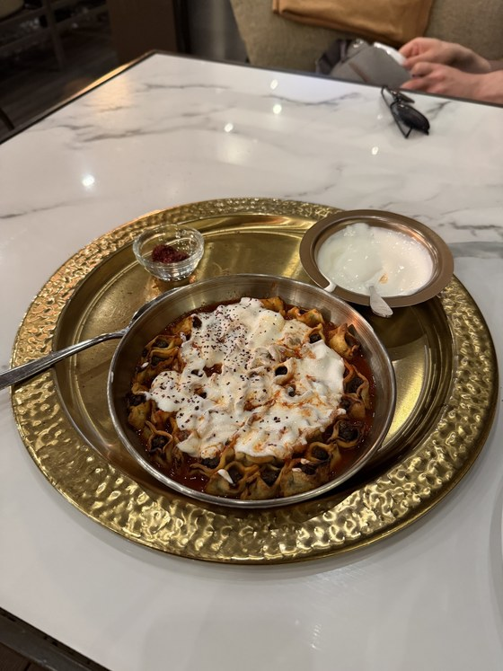
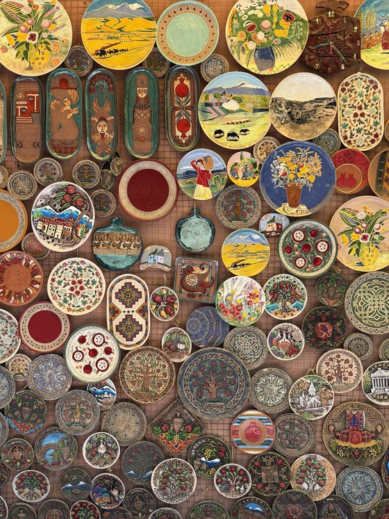
Backpackers can do Armenia on $30 to $60 a day all in, which pays for a dorm bed, cheap local meals and marshrutkas. With $70 to $120 per day you're well into hotels, private tours and eating wherever you like.
Category
Backpacker
Mid-range
Accommodation
$8 – $15
Hostel dorm in Yerevan
$30 – $50
Private room or hotel
Food
$7 – $12
Bakeries & local canteens
$15 – $25
Sit-down Armenian restaurants
Transport
$3 – $6
Marshrutka & shared taxis
$8 – $15
Yandex & GG taxis
Activities
$4 – $8
Monastery & museum entry
$8 – $15
Full day organized tours
Category
Backpacker
Mid-range
Accommodation
$8 – $15
Hostel dorm in Yerevan
$30 – $50
Private room or hotel
Food
$7 – $12
Bakeries & local canteens
$15 – $25
Sit-down Armenian restaurants
Transport
$3 – $6
Marshrutka & shared taxis
$8 – $15
Yandex & GG taxis
Activities
$4 – $8
Monastery & museum entry
$8 – $15
Full day organized tours
Backpacker
$30 – $60
per day
AccommodationHostel dorm in Yerevan$10 – $20
FoodBakeries & local canteens$12 – $15
TransportMarshrutka & shared taxis$3 – $5
ActivitiesMonastery & museum entry$5 – $10
Mid-range
$70 – $120
per day
AccommodationPrivate room or hotel$35 – $55
FoodSit-down Armenian restaurants$15 – $25
TransportYandex & GG taxis$10 – $20
ActivitiesFull-day organized tours$10 – $20
BackpackerMid-range
AccommodationHostel dorm in Yerevan$10 – $20Private room or hotel$35 – $55
FoodBakeries & local canteens$8 – $12Sit-down Armenian restaurants$15 – $25
ActivitiesMonastery & museum entry$5 – $10Full day organized tours$10 – $20
Daily totalper day$30 – $60per day$70 – $120
Safety
Section 09
Safety
09Safety
Safety stopped crossing my mind after the first day. I walked around Yerevan and Gyumri at night without feeling uncomfortable once. Armenia has one of the lowest rates of petty crime in the world. People were consistently helpful, including several who made a real effort to help me when we didn't share a language.
The caveat is geopolitical rather than personal. Relations with Azerbaijan and Türkiye are tense, the 2023 war over Nagorno-Karabakh is still fresh and I saw a lot of military traffic on the roads. None of it affects you as a tourist and relations are improving with both countries as they move further away from the war. As always, check the current travel advice before you go and don't plan any route that assumes those borders will open.
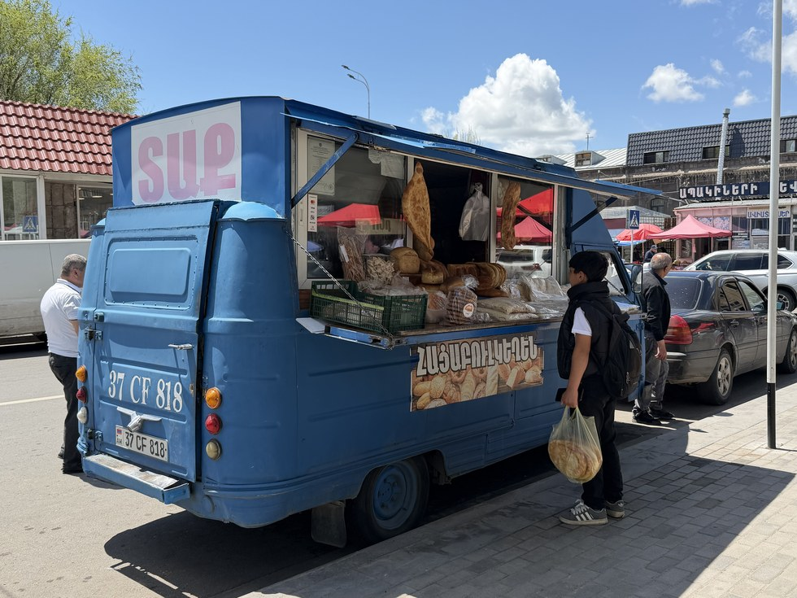
Visa Requirements
Section 10
Visa Requirements
10Visa Requirements
Armenia has a generous visa policy for tourists. If you carry an American, Canadian, EU, British or Australian passport, you can stay up to 180 days visa-free, one of the higher allowances I've come across.
Once I arrived, entry was painless. The border officer asked a couple of routine questions and waved me through in under a minute. There is no onward ticket check and no fee, and the 180 days makes Armenia a really practical base if you're digital nomading.
Currency
Section 11
Currency
11Currency
The official currency of Armenia is the Armenian Dram (AMD). Cards are widely accepted in Yerevan for restaurants, hotels and larger shops. The moment you leave the capital, make sure you're carrying plenty of cash. Local markets, marshrutkas, street vendors and most small-town restaurants are cash only, and ATMs get sparse outside the cities.
Make sure to keep small bills on hand (smaller than the ones that come out of the ATM!). Drivers and market vendors often couldn't break anything large, and a few times I ended up overpaying simply because neither of us had change.
Language
Section 12
Language
12Language
Armenian is the official language and has its own mysterious alphabet (Georgia has its own too). It is an ancient language and you'll see it plastered all over the walls of the ancient monasteries.
Russian is the second language almost everyone has, left over from the Soviet Union, and people will often greet you with a Здравствуйте (Zdravstvuyte). Picking up even a handful of Russian phrases pays off. Younger people in Yerevan generally have good English too.
Where we couldn't understand each other, people went out of their way anyway. One café owner called her daughter just to translate my coffee order, and taxi drivers were happy to let me practice my poor Russian on them.
Last updated: September 2026 · Based on firsthand experience